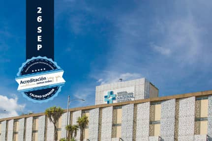
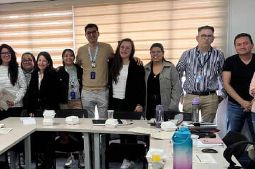
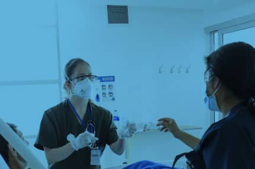
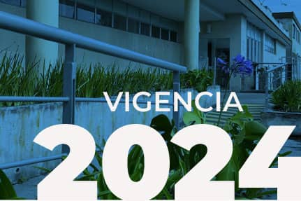

Yo Te cuido seguro:
Por la seguridad del paciente HUN
En conmemoración del Día Mundial de la Seguridad del Paciente,la Organización Mundial de la Salud OMS invita a todas las instituciones a garantizar un diagnóstico correcto que permita una atención segura al paciente. Desde nuestro hospital, a través de la implementación y evaluación constante de la política y el programa de seguridad del paciente nos unimos a este llamado por el diagnóstico y la atención segura.
Leer más

Postulación para Acreditación en salud
ante el ICONTEC ya tiene fecha
El próximo 26 de Septiembre a las 5 pm invitamos a toda la comunidad hospitalaria del HUN a conectarse vía meet a la transmisión del evento de postulación formal ante el ICONTEC, donde a través de una presentación del HUN a la Dirección de Acreditación del ICONTEC, se postulará nuestro hospital para iniciar la ruta de verificación de los criterios de la resolución 3100 de Acreditación en salud.
Leer más

Arrancó la visita de Verificación de criterios de
Habilitación para BPC en investigación
Con el propósito de conseguir el objetivo estratégico para la Certificación por INVIMA en BPC, el martes 17 de septiembre inició la visita del equipo de auditores, quienes verificarán el cumplimiento de las condiciones de la Resolución 2378 de 2008 para certificación en Buenas Prácticas Clínicas (BPC).
Leer más
Estándar Clínico Basado en la Evidencia
prevención, diagnóstico, estadificación, tratamiento, rehabilitación y seguimiento del paciente adulto con lesión renal aguda en el HUN
La lesión renal aguda (LRA) se define como la disminución rápida de la función renal en un período de 48 horas a 7 días y se manifiesta por disminución del volumen urinario y/o por el ascenso de la creatinina.
Leer más

Calendario de eventos
HUN
Calendario de eventos HUN
Leer más

AL DÍA
CON EL DIRECCIONAMIENTO
Conoce el cronograma de eventos de la Dirección General del HUN y participa
en el avance hacia la visión 2025
Leer más